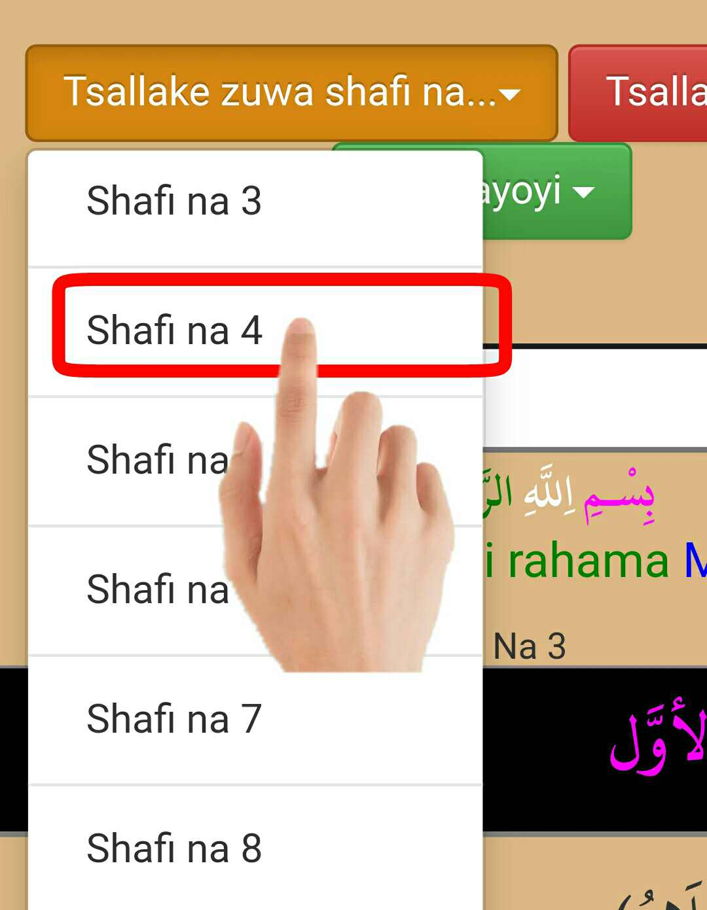

Tambaya: Yaya ake amfani da fassara?
Amsa: Yadda ake amfani da fassara shine ayi amfani da kala wanda yayi daidai da kalma misali idan kalma ja ce a haɗata da 'yar uwarta ja idan rawaya ce a haɗata da rawaya. ga misali a kamar haka.
Tambaya: Na ga ansa ma wani rubutu kalan ruwan toka wani kuma acikin (baka) wato (open bracket) to menene ma'anar hakan?
Amsa:
Tambaya: Menene ma'anar rubutun larabci me kalan ruwan toka?
Amsa: Ma'anar rubutu larabci me kalan ruwan toka shi baya daga cikin fassara domin idan aka sashi acikin fassara, fasarar za ta ɓaci. wato zata lalata maganar shine yasa ake sanyata a kalan ruwan toka domin aƙetareta daga cikin fassara kaɗai ba'a larabci ba, Amma a larabcin ana karantata ba'acireta ba, sabo idan ba'a karanta ba tare da ita ba alarabcinta, ma'anar ta larabci ta ɓaci.
❶ Tambaya: Yaya ake samun sauƙin haddacewan fassaran hausa?
Amsa: Yadda ake samun sauƙin haddacewan fassaran hausa shine bayan an karanta aka iya fassarar a sanya hannu akan rubutun hausan arufeshi sai a fassara larabcin batareda anduba fassarar ba. Ga misali kamar haka.
❷ Tambaya: Yaya ake samun sauƙin haddacewan rubutun larabci batareda anduba ba?
Amsa: Yadda ake samun sauƙin haddacewan rubutun larabci batareda an duba ba shine a sanya hannu akan rubutun larabcin arufeshi sai a fassara hausar zuwa larabci batareda anduba rubutun larabcin ba. Ga misali kamar haka
Tambaya: Yaya ake yaya ake amfani da wa 'yannan kuma menene aikinsu?
Amsa: Yadda ake amfani dasu shine ataɓa guda daga cikin wanda ake buɓuƙa, bari muɗauki Tsallake zuwa shafi na .. bayan antaɓa zai buɗe abinda yaƙunsa sai ashiga wanda ake so. Ga misali kamar haka .
bayan antaɓa zai buɗe kamar haka ↓ misali munɗauki shafi na huɗu 4
bayan muntaɓa zai tsallako yakawo shafinda muka nema kamar haka ↓
Abinda mukayi bisa kuskure Muna roƙon Allah Maɗaukakin sarki shi gafartamuna damu daku baki ɗaya Aamin bijahi nabiyyi na Muhammadu Sallallahu Alaihi Wasallam
.